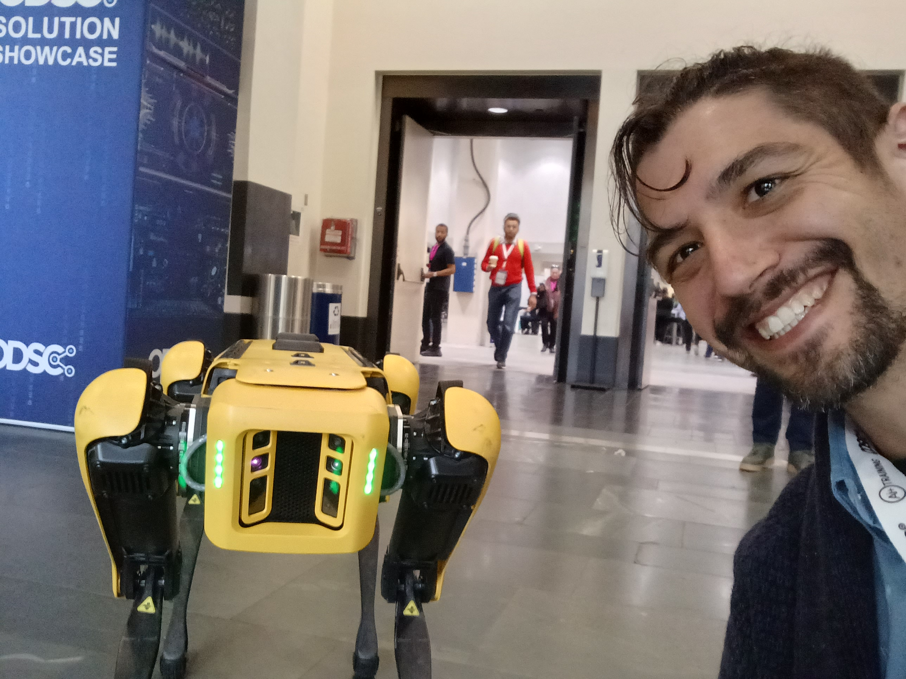
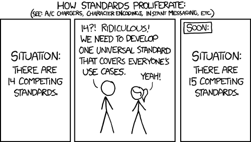

What I Learned From My First Non-Academic Conference
Reflections on ODSC East 2024
Peter Licari ![]()

This week, I attended the 2024 Open Data Science Conference (ODSC) in Boston, Massachusetts. It was the first conference I attended since Covid1 and my first non-academic conference2. As you can see from the picture above, I even got to meet a celebrity while I was there! All in all, I had a great time and learned a ton.
I wanted to write-up my reflections about the conference—about the whole thing generally and about what I think it reflects about Data Science as a field. I’m going to write-up what I learned in the specific panels I attended in a separate post.3
Reflections on the Non-Academic Conference Experience
So, as I mentioned above, this was my first non-academic conference. For better or worse then, my expectations for ODSC were colored by the 8 or so conferences that I attended/presented at while in grad school. But I very quickly realized that, nope, this was nothing like one of those!
The three most abrupt departures from my expectations were:
- The primary purpose of many (most?) of the presenters/speakers is to sell you on the companies they work with or for.
- The information density of the average talk was far less than your typical presenter at a scientific conference. (Information density is not the same as being “informative!” I’ll get to that in a bit).
- People were far more into, and aggressive about, networking.4
(If I had to pick a fourth thing it’d be that the swag is, on average, way better! I got a coffee mug, a decent lawn-work hat, a Plotly tote bag, and super fun stickers for my laptop. Some companies were giving out tumblers and Rubik’s cubes—and some individual people were giving out free books on in-demand topics! Though I wasn’t able to get any myself because, turns out, “free books” is like catnip for nerds and demand far outstripped supply.)
The more I thought about it though, the more I came to believe that these deviations from my expectation reflected deeper structural differences in how these business-oriented conferences work compared to the academic conferences I attended.
The structural roots for why corporate conferences differ from academic conferences
I don’t have data for this, but I strongly suspect that typical attendees of an academic conference are primarily there to share their own work. Learning from others, serving as a moderator or discussant, networking, etc, are valued activities—but are ultimately secondary. Why? Because attendees frequently have limited financial support from their institutions—if any at all! And a good chunk of whatever support is available is either explicitly or de facto contingent on having something to present. Owing to the incentive structure of contemporary academia—where people’s job prospects are strongly yoked to the number of papers they publish as well as the apparent novelty of their content—most people aren’t going to attend if the conference doesn’t stand a good chance of adding something valuable to their CV.
This culminates in conferences predominantly oriented towards advanced discussion of bleeding-edge research—conveyed through talks that are incredibly information-dense. You plow through slides overflowing with text and packed with regression coefficients. And because the production of academic research is structurally adversarial5, these talks are further stuffed with various defensive maneuvers meant to persuade a presumed skeptical audience of the content’s validity. An hour-and-fifteen-minutes’ worth of time will frequently have 3-5 such talks—and then a discussant’s commentary followed by further question-and-answer from the audience. That’s not just exhausting for the attendees, it’s exhausting for the presenters! Many folks frequently have multiple papers/projects to present and/or have service responsibilities such as being a discussant or moderator. When you then account for the fact that folks will also want to support their friends/colleagues by attending their presentations, you can understand why most have limited emotional/cognitive bandwidth to learn or to “network.”
But, in the business world, it’s not necessarily expected that you’ll be the one footing all (or even most) of the bill! Most people are there on their company’s dime. And while most businesses are certainly glad to have employees capable of conceptualizing novel, bleeding-edge research ideas, that’s not the prevailing expectation. Their employees are expected to apply practices/concepts to their work—or to guide the business in procuring access to platforms or individuals capable of solving/expediting business critical tasks. Far, far more people have dispositions conducive towards the latter than the former. And because business environments and affiliations can change very quickly (especially in tech), you don’t know what your company—or you as an individual!—will need with 100% certainty in 6 months, 1 year, 5 years. It pays to have a large, diverse network to accommodate these shifting realities.
Further, for the minority of folks who are presenting, the company is usually instrumental in the production of whatever thing that they (presenter and company both) feel is worth disseminating. In academic settings, the institution’s involvement in the direction of the research is limited. Much of the time, they’ll only engage with it when it undergoes review by the IRB6 and/or, if it looks like it’ll make a big enough splash, when they publicize it after it’s been completed. This is by design: it’s so researchers are able to advance knowledge broadly and not just knowledge deigned “acceptable” by powerful figures administering or funding the institution. Academic research, then, is a much more individually-driven affair. But, outside of those spaces, the work being conducted is frequently performed using the company’s proprietary tools/platforms/methods/data/etc.
What does all this mean? Quite a few things!
People attending corporate conferences have different reasons for being there than those at academic conferences. Most corporate conference attendees don’t have the same predominant, unifying prerogative to present as academic conference attendees do. Corporate attendees are instead given a more nebulous prerogative: Acquire information to improve how we, the company, do things. That information can take the form of new knowledge, new techniques, new vendors, new sales prospects, or new interpersonal connections. In short, academic conference attendees are oft focused on production. Corporate conference attendees are instead focused on consumption.
People presenting talks at corporate conferences have different incentives than those at academic conferences. Because the company is instrumental to the research presentation (both because they facilitate the research itself and foot the bill for conference attendance), presenters tend to discuss the work with a lot of excitement. And if their company is a start-up or is vying for market share, you can understand why they’d dedicate a fair chunk of presentation time towards advertising their products and services. (Especially since getting a booth on the showroom floor costs a bunch of money—both directly to the conference and in the aforementioned sweet, sweet swag). Additionally, their audience is not comprised solely of the other 7 people in the country (and their 3 besties) who a) comprehend and b) give a shit about the content of the talk. So they have to present with the expectation that many of the people watching are relatively (or entirely) new to the topic they’re presenting on.7 They are also (usually but not always) given more time, so the talks don’t feel like they have the information density of a black hole. There’s also a larger demand for case studies and workshops, things where presenters go into the gory details of implementation rather than the summary of a gajillion robustness tests.
As an attendee, my favorite talks were those approaching their slots as either workshops or lectures on substantive topics, with perhaps a bit of “look how cool we are, specifically” sprinkled throughout. Fortunately, I’d say that this was how the majority of talks I attended went. The best presenters, in my opinion, were those who limited their sales pitch to the first or last few minutes of the talk or who brought it up in very small doses throughout the whole presentation. (Bonus points for those who acknowledged competing products and services in the space!) That’s because I don’t mind becoming aware of how neat or nifty your widget is. In fact, I welcome it! As I said before, attendees are there to learn about the broader data science environment—which absolutely includes vendors! But I do mind feeling like I’m sitting through an infomercial or feeling like I was served the IRL equivalent of a click-bait video. Fortunately, though, that was only a handful of presentations that I came across.
As an upshot to all of this, it meant that I got to attend so many more talks and workshops than I would’ve attended at an academic conference. If I attended more than 3-4 sessions in a day, my brain would be dribbling out of my ears.8 I attended about double that amount at ODSC. Which meant that, even if the information density of each individual talk was lower, I learned a lot while I was there. I got tremendous breadth of information, a lot of which is conceivably actionable. Not “actionable” in the sense that I expect to immediately implement everything that I learned the second I get back to the office, but more that I have a couple of ideas that I’m itching to put into practice soon and a panoply of others that will give me a fantastic initial foothold should the right situation present itself.
So, in short, this was a deviation of my expectations—but frequently in a good or interesting way! And, really, those deviations make sense when you think about the structural differences between corporate conferences and academic conferences.
Reflections on the State of Data Science, Specifically
Did you know that LLMs are a thing? Well, boy howdy, if you didn’t you sure would after ODSC!
Before going any further, though: I think that anyone attending this (or any other) data science conference needs to avoid conflating what they see within the conference as what’s happening in practice outside of it. Remember, corporate conferences are deliberately oriented around selling folks on “the next big thing” but day-to-day work oft rests on tried-and-true practices that can be years—or generations9—removed from the bleeding edge. And that’s sensible! The bleeding edge is fragile. Many businesses need something more reliable; they can’t gamble on stuff that hasn’t been vetted.
But I do think this sort of stuff is informative in that it’ll shape the specters haunting our FOMO. And, here, the ghost of data science future takes on the form of a language model.
AI is huge right now. And because it’s a buzzword, a lot of stuff that was previously called “machine learning” (like computer vision, natural language processing, and generative models) is getting enfolded into the term. But AI is, as the old joke goes, a lot like teenage sex: Everyone is saying that they’re doing it but no one actually is. And the vast majority of the folks who are doing it are more fumbling around awkwardly rather than having the breakthrough “mature” experience they imagined it would be.
I don’t want to come across as a curmudgeon; I think LLMs are really cool and have a lot of interesting potential applications. But I think, from what I saw, we’re still at the “throw every idea at the wall and see what sticks” stage. Most of them don’t stick—and those that inititally adhere will need additional effort and maturation to keep them affixed.
One thing I will say that heartened me though was that there were a fair number of talks that discussed exactly this! They discussed the fact that LLM applications are far different than a typical data application—and successfully deploying them is going to mean tackling a bunch of novel challenges. There was substantial talk about making sure these models were ethically implemented: that they didn’t propagate biases, didn’t steal intellectual property or material under copyright, and that they wouldn’t be able to produce or promulgate dangerous misinformation. And these talks were, at least from what I could tell, very well received.
(Of course, it’s laudable for good actors to try and uphold rigorous standards, but it’s challenging when damn-near anyone with sufficient motivation can download or spin-up models without necessarily needing to adhere to such standards. It’d be like having a gargantuan “free guns and ammo” table in the middle of a busy city with a smaller table off to the side with a sign saying “Optional: Tenets on ethical and responsible gun ownership.” It probably isn’t the best idea to allow things with massive destructive potential to be accessible to those with zero—or negative—interest in handling it responsibly.)
Another thing I noticed continues a trend I’ve seen in Data Science forums and online spaces. There’s a push to recognize “Data Engineering” and/or “Data Ops” as their own fields distinct from “Data Science”,10 with these emphasizing the aspects of the gig that focus on all the critical stuff that comes before and after successfully developing a statistical/ML/AI model. You know, the “boring” but incredibly necessary stuff like data storage, transformation, governance, and deployment.11 This conference not only had numerous talks on these topics but had an entire Data Engineering track! Personally, I think it’s good that we’re getting more specific language, frameworks, and paradigms around these critical infrastructural tasks. Generalists benefit from learning more rigorous and scalable approaches to necessary tasks—and specialists (ideally) are allowed to hone-in on the elements of “data science” that actually appeals to them. Everyone wins! (Hopefully). The only issue that I can foresee with this is that an explosion of platforms and standards might put us in the position of this XKCD comic.

There are two things that I felt were relatively lacking from ODSC though. The first, though, was clearly not due to a lack of demand: Soft skill development. It’s one thing to spin-up a fancy LLM that can analyze consumer data while pretending to be Squirrel Girl or whatever—it’s another to effectively communicate the necessary whats, hows, and whys to non-technical stakeholders. The few sessions ODSC offered on this and similar topics were absolutely packed though: standing room only, folks amassed just out the door. And it reflects not only what people have been experiencing but what newer folks to the field are increasingly being told matters: All the smarts in the world, all the models living in Jupyter/Quarto notebooks, it all means nothing if it can’t be effectively communicated to the people in charge of making sure your check gets signed.
The other might just reflect my own preferences. I felt there was a lack of emphasis on non-AI methodologies, specifically on the “bread-and-butter” of modeling and analysis. I remember one presenter noting—entirely correctly—that many binary classification tasks are adequately accomplished by running a logistic regression. OLS gets a lot of flack, but, damn it, it often works. Want to make clusters? Many fancy algorithms can’t beat KNN in practice. Got a tough multimodal classification task? Tree models go brrrrrrrr.
As I said before, many attendees are there to learn things: ML and statistics are such huge fields, there’s no way to learn everything. I would’ve loved to brush-up on stuff that I’m currently weak in. But most of those talks were few and far between: and often focused on very specific use cases rather than serving as broader introductions to the concepts.
I think part of this reflects the fact that Data Science is a younger and more aspirational discipline. A lot folks within it are techno-optimists who see an infinitely expanding horizon of evermore powerful tools promising to utterly supplant our current capabilities. So a lot of the things that people want to learn are those futuristic technologies. Standard ML and statistics, for many, is more like eating your vegetables: it’s the part of your plate you gotta eat so that you’re allowed to get dessert.
But, like with vegetables, I’m convinced that the reason people think that it tastes bad is because they’ve never been exposed to how to “cook” it properly. Stats is so much more beautiful and dynamic than we’re often taught—and familiarity with the deeper logics and epistemological underpinnings of all of this make us more flexible practitioners!
Plus, even if all of that were not true, even if our metaphorical vegetables could only be consumed through boiling it: It may be fun to keep an eye to the future—but stuff does still need to get done today!
(As does my own work, actually, so I think I’ll stop it here.)
In sum: this conference reveals to me that much of Data Science, as a field, will be preoccupying itself with “AI” for the foreseeable future—but it’s less clear that we’ve hit many widespread, productive applications. But there’s also a large demand to learn the skills surrounding the traditional “build fancy model” part of the gig—from both making sure the data gets fed into it reliably and in making sure its capabilities and limitations are successfully discussed with stakeholders. (And/or convincing said stakeholders to go through with the thing at all!). I’ve got mixed feelings towards the AI bit, but I think the other aspects are deserving of our increased attention as practitioners.
Footnotes
I could have also written “since graduate school” or “since my daughter was born” and all of those things would’ve been equally correct. Which shows to go just how bloody hectic 2020 was…↩︎
I’m ignoring, for now, the conference I attended when I was (I think?) 11 where my father had a booth for the family business at the Orlando convention center.↩︎
After all, ~30% of the reason I have this blog is to operate as a bit of a online brain, preserving stuff that I’ve thought about and think might be useful for others and/or Future Peter someday.↩︎
Don’t get me wrong, we were very much encouraged to network at academic conferences as well. But it seemed to be a far more salient consideration at this conference—and I was informed by my managers (who joined me in the conference) that this was fairly typical.↩︎
Peer reviewers often see their job as weeding-out junk science and to strengthen promising research as one would strengthen steel: A lot of pummeling and fire.↩︎
For those who don’t know: IRB’s are institutions within the University that review proposed and ongoing research projects so that they adhere to certain ethical standards. Though, in practice, it’s more to ensure that the University itself is maximally shielded from allegations of unethical/illegal research conduct. Which are correlated but not entirely equivalent undertakings.↩︎
This is amplified in this particular conference. “Data Science” is a big-tent field encompassing people focused on applied statistics, engineers focused on constructing reliable data ingestion and transformation pipelines, folks building LLMs and computer vision models—and lots more.↩︎
Of course, I frequently did anyhow, because I embody an unfortunate combination of high need-for-cognition, high tolerance-for-discomfort, and chronic optimism bias vis my current and future energy levels.↩︎
I mean like tech “generations” here—which are even more compressed than dog years. Though, right, some systems are still running on COBOL so, yeah, literal generations works here too.↩︎
Some folks online tend to want to see “Data Science” more or less done away with in favor of additional, more specific and specialized titles. IMHO, that will work well for large companies with a lot of data maturity but, in many smaller outfits, “Data Scientist”, “Data Engineer”, “Data Analyst”, and all the other kindred terms are placeholders for the general role of “person who does anything vaguely data related” because they aren’t large/mature enough to need something other than a generalist or 3.↩︎
Though, like I tell my 4-year-old: Nothing is truly boring if you look at it from the right angle.↩︎
Reuse
Citation
@online{licari2024,
author = {Licari, Peter},
title = {What {I} {Learned} {From} {My} {First} {Non-Academic}
{Conference}},
date = {2024-04-26},
url = {https://www.peterlicari.com/posts/odsc-2024/},
langid = {en}
}